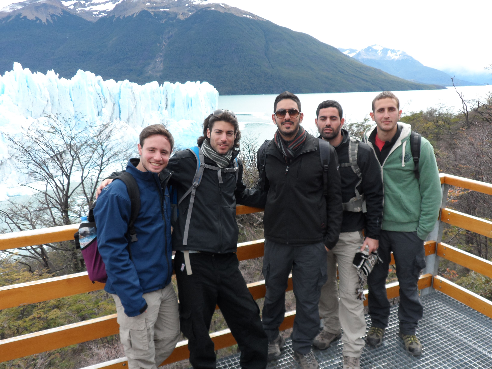
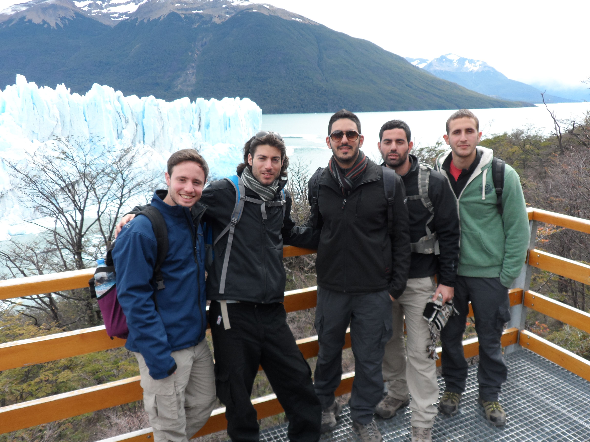

About me
My name is Omer and I'm 29 years old. I'm originally from Qiryat Ata.
My hobbies include soccer, playing guitar, drawing and going to the beach to relax and "have a breather" .
My favorite soccer team is Hapoel Haifa (as you can see by the logo on the top left corner) since I was 6 years old.
My expectations from this course are to improve my web development skills, especially in back-end programming.
Q&A
1. Three difrences between web 1.0, 2.0 and 3.0:
A. The use of the web- in web 1.0 we can only read from the page because those pages are static.
in web 2.0 we can also write and contribute information like in facebook, Youtube.
in web 3.0 we can read, write and execute smart web apllications with AI algorithems, machine learning.
B. Advertising- in 1.0 advertisers used a banner advertising which is just a rectangular graphic display that stretches across the top, bottom or sides of a website containing an advertisement
in 2.0 advertisers use an Interactive Advertising which is promotional techniques that include an element of feedback from those to whom the advertisements are directed
in 3.0 advertisers use behavioral advertising which is displaying advertisements based on the behavior of the user history.
C. Basic concept- In 1.0 the basic concept was to connect between people and information delivered by the companies
In 2.0 the basic concept is to connect people and share their information with each other
In 3.0 the basic concept is to connect knowleadge meaning information is more connected thanks to semantic metadata
2. Asking the web for "Good restaurants in Tel Aviv":
In web 1.0 we will probably receive a static page with the restaurants in Tel Aviv.
In web 2.0 we will google it and receive results that mainly contain articales for Tel Aviv best restaurants.
In web 3.0 we will receive more results that are matching my prefernces based on my history (restaurants websites I looked,liked on facebook\Instagram, types of cooking I looked, et cetera..).


 
